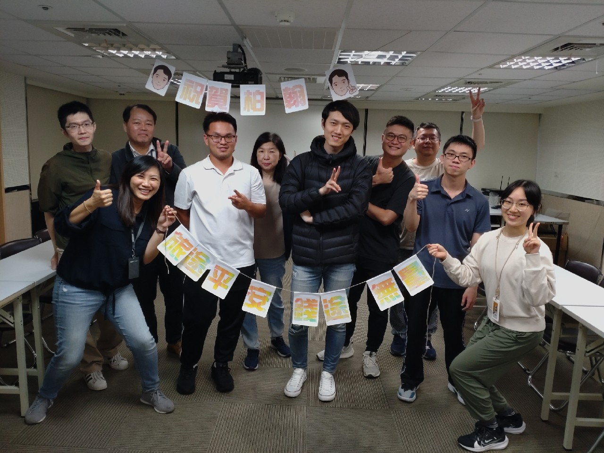
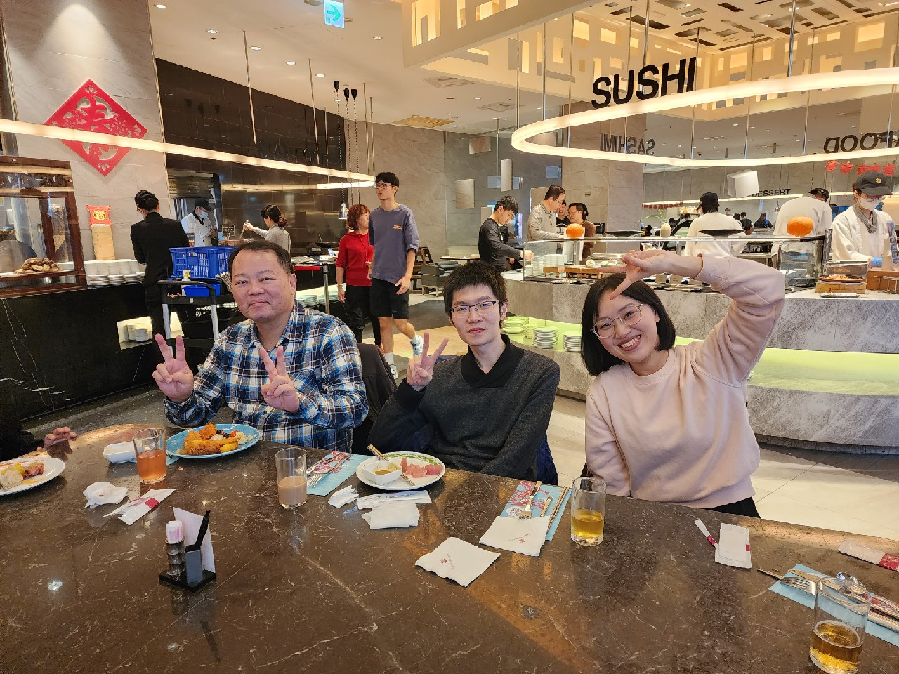
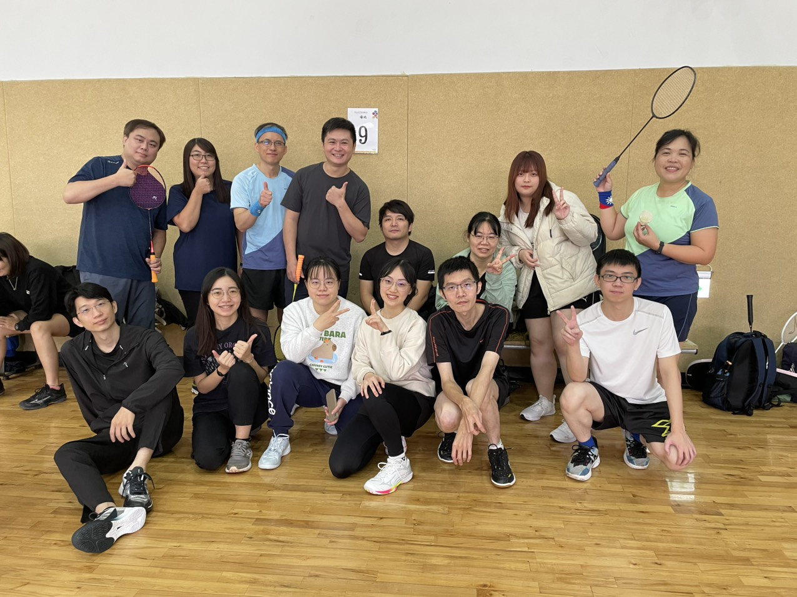
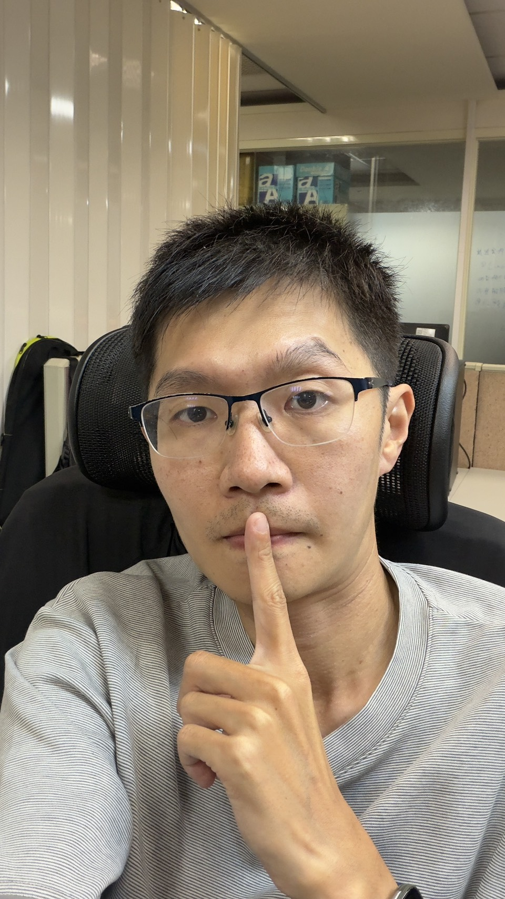
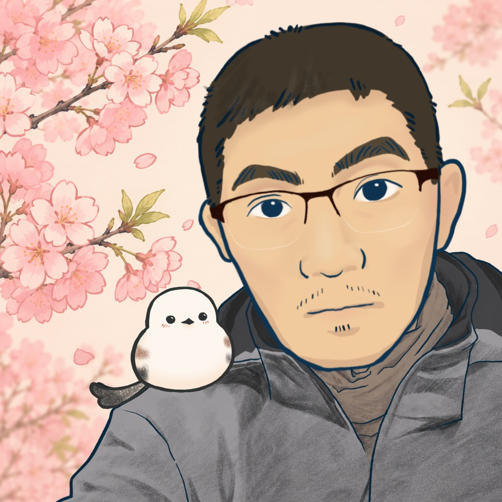

還不認識你
一切都很陌生的時候
那時候其實還不知道， 之後會一起累積這麼多回憶。

FOR YOU
不是因為不重要， 反而是因為太熟悉、太自然了， 所以總覺得好像不用特別提起。 可是後來才發現， 有些感謝如果一直放在心裡， 時間久了，反而會讓人覺得有點可惜。 所以我想把那些沒有說出口的話， 還有一路走來留下的片段， 好好整理起來。 就當作是一份很小、很私人的紀念。 寫給你。 也寫給我們一路走到現在的這段回憶。
↓ 請往下看看01
那時候其實還不知道， 之後會一起累積這麼多回憶。

沒想到你是個如此健談的人， 偶爾也分享有趣的事情~

慢慢有了默契(?) 總之，和大家留下了美好的回憶~

很慶幸， 你出現在我的生活裡。

02
點照片看看背後藏了什麼。 雖然~還有好多好多，放都放不完呢~
03
你很會記得別人隨口提過的小事。
嘴巴上嫌麻煩， 結果總是默默地將一切打理好。
有些沮喪、難過的時候， 跟你講完，好像就沒那麼嚴重了。
還有一些事情我沒有特別說過， 但其實一直都有放在心上。
04
謝謝你願意聽
謝謝你聽過我講很多有的沒的， 不管是很重要的事情， 還是其實根本沒那麼重要的事情。
謝謝你的陪伴
相遇的時光彌足珍貴， 就算只是吃飯、聊天、走走散心。 但其實都特別空出來的時間(,,•﹏•,,)
謝謝你是你
過往我們經歷了很多事， 也讓我成長不少， 我真的很高興有認識你。

每個人看見事情的角度都不同，給你一張我的視角裡見到的帥氣男人~
05
嗨，
其實做這個東西的時候， 我想了很久到底要寫什麼。
後來發現， 比起講一些很厲害的話， 我最想說的其實很簡單。
謝謝你出現在我的生活裡。
謝謝你陪我經歷過那些開心的、 荒謬的，有點低潮的時候。
很多事情當下看起來可能很普通， 但這些時光總是在我的回憶中閃閃發亮。
謝謝你讓我認識到「人與人的相處與回應」其實可以很柔軟。 「關心」也可以有一點距離。 「希望被人接住」更應該學會好好的表達自己。 「選擇新的方向」不代表要捨去過往的全部，人生其實還有很多條路可以走。
謝謝你陪膽小的我去了很多沒去過的地方， 有你的陪伴，我好像長大了不少~ 如果沒有這段相處，我可能無法如此深刻看見自己身上的這些地方， 也不會成為現在這個稍微勇敢面對事情一點的自己。
總之，很高興認識你。
也真的很謝謝你陪我走過這一段。
06